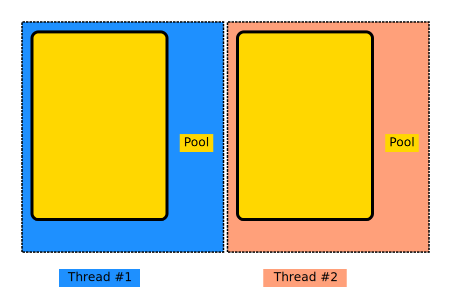
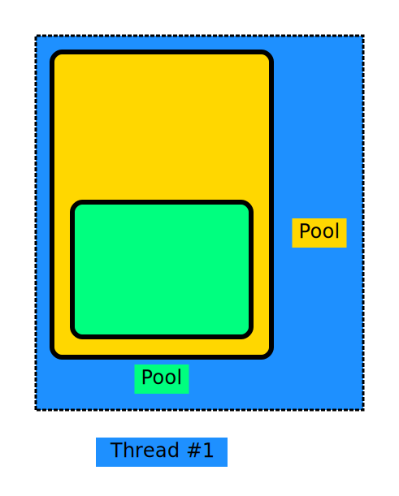
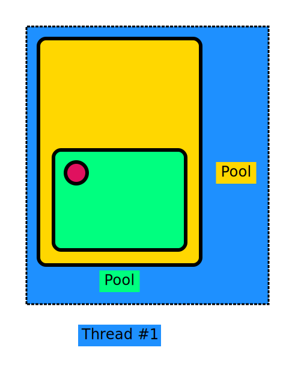
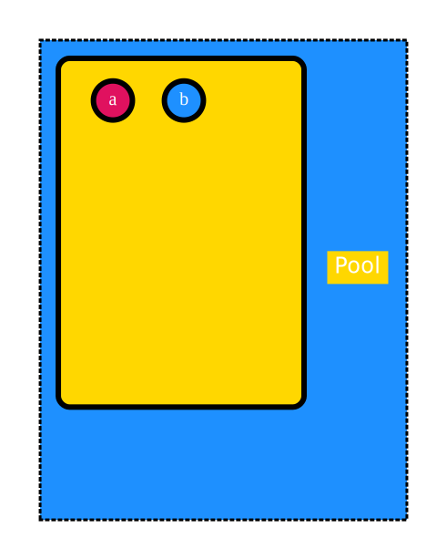
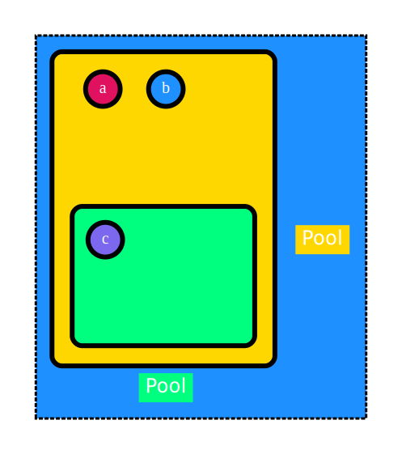
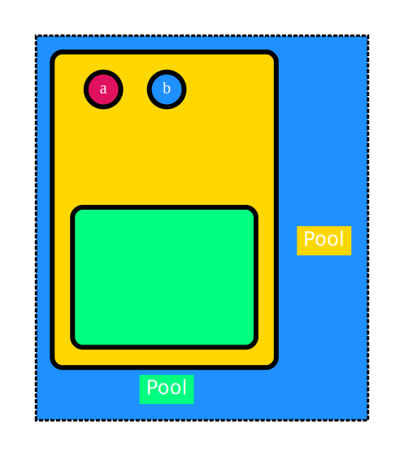

NSObject: -autorelease
Welcome to the world of mulle-objc’s memory management, where NSAutoreleasePool reigns supreme.
You learned about the retain counting and the lifetime of objects in a previous
chapter, and now comes the chapter that will try to sell you, that you don’t
need to worry about retain counting. As now, the NSAutoreleasePool makes its
appearance on the scene.
The NSAutoreleasePool class
Basically a NSAutoreleasePool just manages an array of pointers to objects.
You can add objects to the pool by using the -autorelease convenience
method on NSObject. This method locates the current pool for the running
thread and adds the object to the array.
The autorelease pool has one operational method -drain, which iterates
through this array, sending a -release message to each object. You usually
call -drain only indirectly, once a NSAutoreleasePool expires.
Creating an pool in your code is never necessary, but it can be
a useful optimization, when you create lots of short lived objects. But you
can if you want with the @autoreleasepool directive. More on this later.
Thread-Specific Pool Stacks
Each thread in mulle-objc maintains its own stack of autorelease pools. This design ensures thread safety without the need for expensive locking mechanisms.

As shown above, Thread #1 and Thread #2 each manage their own pools independently, preventing any cross-thread interference. Each thread under mulle-objc control, even the main thread creates an autorelease pool when it starts up.
RULE: An object can only be messaged by a thread, if the object resides in the autoreleasepool stack of that thread.
This ensures that autoreleased objects always have a pool to be added to, even
in the absence of explicit @autoreleasepool directives.
Nested Pool Management
|  |  |
| Pools can be nested within each other, creating a hierarchical structure for fine-grained memory management | Objects are always added to the innermost pool in the current thread’s stack. |
The next code snippet and the accompanying drwawing visualize how nested autorelease pools collect and dispose of objects during program execution.
NOTE: The
+objectmethod creates an instance and then calls-autoreleaseon it.
@autoreleasepool
{ // pool 1 starts
Document *a;
Document *b;
Document *c;
a = [Document object];
b = [Document object]; // #1#
@autoreleasepool
{ // pool 2 starts
c = [Document object]; // #2
// c added to pool 2
} // pool 2 drains, c released // #3
// #4
mulle_printf( "a %@ and b %@ are still alive\n", a);
// this would crash likely
// mulle_printf( "c %@ is dead\n", c);
} // pool 1 drains
When an autorelease pool is drained, it releases all the objects it contains. This happens automatically at the end of an @autoreleasepool scope.
 #1 |
 #2 |
 #3 |
#4 |
Creating autoreleased and zeroed C memory
An autoreleasepool can also facilitate C coding. You can use
MulleObjCCallocAutoreleased to create an autoreleased and zeroed
block of memory:
p = MulleObjCCallocAutoreleased( 1, sizeof( struct whatever));
This is like a calloc you don’t have to free. Remember though, you can’
retain an allocation like this.
Caveat
While mulle-objc’s autorelease system offers great convenience, it’s important to be aware of potential pitfalls. For instance, creating and keeping to many autoreleased objects and never getting to a pool drain will lead to increased memory usage.
This can happen for example in long-running operations, like a database import
from JSON for example. The remedy is to use @autoreleasepool blocks or
to manually drain pools once in a while.
Discussion on NSAutoreleasePool vs Garbage Collection
NSAutoreleasePool offers several advantages over garbage collection, particularly in terms of performance and predictability.
- Deterministic Memory Management: With NSAutoreleasePool, developers have control over when memory is released, allowing for more predictable memory usage patterns. In contrast, garbage collection can introduce latency as it runs in the background, potentially leading to unpredictable pauses in application performance.
- Lower Overhead: NSAutoreleasePool has a lower runtime overhead compared to garbage collection. It does not require the additional resources needed to track object references and manage cycles, which can be particularly beneficial in resource-constrained environments.
- Fine-Grained Control: Developers can create and drain autorelease pools at specific points in their code, allowing for fine-tuned memory management strategies. This is especially useful in applications with varying memory demands, where developers can optimize memory usage based on the current workload.
- Control over Resource: Developers can release resources (like file
handles) when they want with
-mullePerformFinalize, compared to garbage collection which is unpredictable.